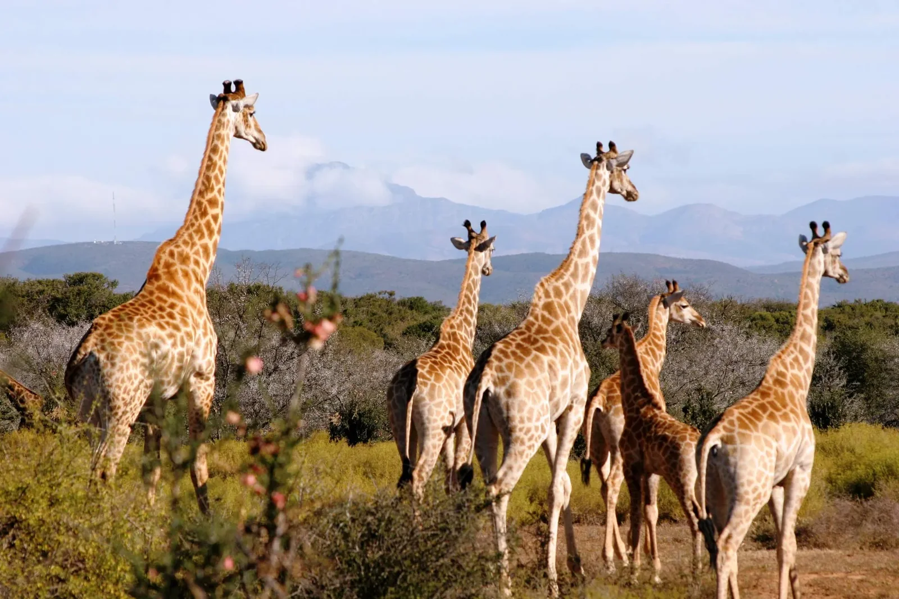

Our wedding timeline
-
I
Welcome picnic
Sunday, 14 March 2027
-
II
The Holud
Tuesday, 16 March 2027
-
III
The wedding
Saturday, 20 March 2027


Places we’ve been


Cape Town
Event 01
The welcome picnic
An ‘adda’ under the mountain
An adda is a Bengali tradition, essentially the art of hanging out. Think long, easy, unstructured conversation with good people, unhurried chats that go wherever they go. That’s exactly the spirit we want to start the week with: a mountain-side picnic where everyone can meet each other, swap some stories, play some games, and stay for as long as you like. We’ll hand out your Holud outfit here, so do come to this one if you can.
- Date
- Sunday, 14 March 2027
- Time
- 15h00 – 19h00
- Dress
- Casual and cool.
Event 02
The Holud
Gilded and ungovernable
The holud is a traditional ceremony dating back to Affy’s forefathers’ times, when marriages were arranged and the bride and groom would be meeting for the first time. The traditions include “looking through the mirror”, where the two of them see each other first through the gaze of a mirror. There will also be skits, which will be fun: Gabby’s friends acting out her past so we get a sneak peek at who Affy is really getting tied up with, and Affy’s mates doing a massive disservice to his spotless one.
- Date
- Tuesday, 16 March 2027
- Time
- 15h00 – 21h00
- Dress
- We’re providing kurtas and saris — the RSVP asks for your size. Come dressed to get changed but you can wear your own thing instead if you’d rather.

Oudtshoorn
Event 03
The wedding
A wild dream at the edge of the world
Following the beautiful Route 62, coaches will pick us up from Cape Town and carry everyone about five hours into the wilderness of the Karoo, arriving the night before. During the day you’ll spot giraffes, zebras and the rest of it. On the day itself we’ll have a toast, speeches, and one last celebration to tie out the adventure, dancing into the night under the stars.
- Date
- Saturday, 20 March 2027
- Time
- From 15h00
- Dress
- Formal attire. It’s a game lodge, so the evening runs on grass and gravel and cools off after dark — worth a thought for shoes and a second layer.
Logistics
Getting there
The week happens in two places. The picnic and the Holud are both in Cape Town; the wedding is at Oudtshoorn, about four to five hours drive away. To help you get there we’ll be chartering coaches from Cape Town on the Friday morning, at no cost to you. If you’d rather rent a car and make your own journey of it, you’re more than welcome.
Coach from Cape Town
We’re paying for it. Tell us on the RSVP if you want a seat and we’ll sort the rest.
Drive Route 62
The inland route through the Little Karoo: beautiful open roads, mountain passes, farm stalls. Worth stretching over two days if you can.
Logistics
Where to stay
Oudtshoorn is a small town and the wedding weekend will fill it, so book early. Three we’d point you at, cheapest first.


Practical
What to wear
We know you’ll be travelling from all over the world and we hope you can travel light. Cape Town in March is very pleasant: expect 25 degrees and a little bit of wind. The Karoo is a few degrees warmer and a fair bit drier, but it cools off marvellously during the evening.
All of this is a steer, not a rule. It’s here to save you the guessing, not to hold you to anything. If you’d rather wear something else, please do — we’d far rather you turned up feeling like yourself than spent a fortnight hunting down exactly the right thing.
Welcome picnic
Casual and cool. It’s a garden, on grass, in the afternoon — so bring shoes that agree with that.
Holud
We’re providing the outfits. A kurta or a sari, handed out at the picnic on the 14th. Come dressed to get changed — or wear your own thing instead if you’d rather.
Wedding
Formal attire. The one practical warning: it’s a game lodge, so a good part of the evening happens on grass and gravel, and the Karoo cools off properly once the sun goes. Heels will struggle, and you’ll want a second layer by the time we’re dancing.